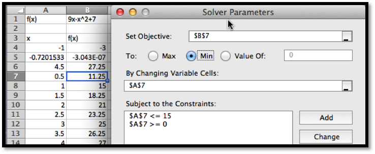
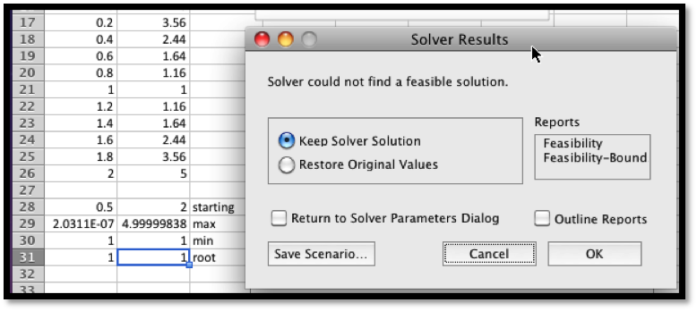

We should expect, whenever we look at an operation that is used a lot in the business world, that Excel will have a fairly simple command to achieve the result. In section 1.5 we introduced Goal Seek, a tool that is part of Excel, and that can be used to solve an equation for a root from a given starting point. In the last section, we noted that one can find candidates for a local maximum or minimum of a function by finding the derivative and using Goal Seek to find where the derivative is 0. In this section we introduce Solver, an Add-In to Excel. It is easiest to think of solver as a more powerful version of Goal Seek. It will be easiest to walk through the use of Solver while working an example.
Example3.5.1Use Solver to gather information about the graph
Let \(f(x)=9 x-x^2+7\).
Solution: As always, we start by using simpler tools. In this case it is useful to have Excel sketch a graph and to use information we gathered in prior course. From the form of the function we know the graph is a parabola that points downwards.
Looking at the chart and the picture we see that the vertex is close to \(x=4.5\). We also see that the x-intercepts are close to \(x=-0.5\) and \(x=9.5\).
Next, we want to make sure that Solver is installed. It should be on the Analysis section of the Data tab.
If you don’t find it there, you should go to the online help for Excel, and look for help on Solver. Under the topic “Define and solve a problem by using Solver”, select first “Define and solve a problem”, then “If you don’t see Solver under Analysis on the Data tab”.
We first want to use Solver to find a root. Using the same approach we used with Goal seek, we would like cell B5 to be set equal to 0 by changing the value of Call A5. (As we have set up the problem, we could use solver starting with any of the cells that give a value for f(x). I chose the one that has f(x) closest to the desired result.)
Solver finds a solution with \(x=-0.72015\). We are given a dialog box that asks if we want to keep the solver solution or restore our original value.
As with Goal Seek, if we use Solver again, starting with x closer to 9, we will find a solution \(x=9.72015\).
However, the reason we introduce Solver, is that it can do things would be more difficult with Goal Seek. From the graph, and our knowledge or parabolas, we know the graph has a single maximum. To find the maximum with Goal Seek, we need to realize that the maximum occurs when the derivative is 0, define the numerical derivative, then set the derivative equal to 0. With Solver, we simply ask it to find the maximum. It finds the vertex at \(x=4.5\).
We also would like to be able to find a minimum. From the picture, we know that a downward pointing parabola has no absolute minimum. However, in business, we are typically concerned with functions defined on a finite domain. For this problem, consider only the interval \(0\le x\le 15\). We want the minimum to appear in cell B7, so we want to constrain cell A7. If we start Solver, then hit the add button, we get a dialog box to enter the first constraint, that A7\(\ge \)0.
In a similar manner, we add the constraint that A7 15 and ask solver for a minimum.

Since we started the search for the minimum at x=0.5, Solver finds the minimum at x=0. This is a “local minimum”. Any x value in the interval that is close by gives a higher value for the function.
We would also like to find the minimum at the other end of the interval. To do that it is useful to know a bit of the mathematics behind what solver is doing. Solver uses derivatives from the starting point to decide on the direction it should look and how far it should go to find the next guess for its answer. This is a modification of a technique called Newton’s method. In terms of our picture, depending on whether we tell it to find a maximum, minimum, or specified value, Solver tries to slide up or down the graph until it finds a good candidate, which it gives us as a solution. It is actually looking for the first local maximum or minimum it gets to. It does not look for other candidates. So if we started at x=0.5 it will slide to the left to find an answer. To find the minimum at the other end of the interval we need a starting point where the graph is already sloping down to the right. Starting at x=8 should work. We set up solver.
Solver finds that the curve had a minimum at x=15 with f(x)=-83.
To recap, using Solver on the interval \(0\le x\le 15\), we found has a root at \(x=9.72015\), a maximum at \(x=4.5\), and local minimums at \(x=0\) and \(x=15\). We also found the values of \(f(x)\) at all of those points. However, this example was chosen because we could get the same results with work by simply using the properties of parabolas. Thus, we now want to ask the same questions about a problem we cannot solve algebraically.
Example3.5.2 A deceptive graph
Use solver to gather information, on the interval \(0\le x\le 15\), on the graph of \(f(x)=(x^3-4x^2+4x+3) e^(-x/2)\).
Solution: As always, start by looking at a graph.
From the graph I expect the function has no roots on the interval. It has local minimums near 0, 2.5, and 10. It has local maximums near 0.5, and 8. I will need to add constraints to find the local minimums at the boundaries. To make my worksheet easy to read I add two extra columns for the x and y values of interesting point, and fill in guesses.
After I use Solver, I find the local minimums occur at 0, 2.326, and 10, and the local maximums occur at 0.29115 and 7.3827. The maximum value for the function in the interval is 5.409 and the minimum is 1.0149. We verify that the endpoints, \(x=0\) and \(x=10\), are both local minimums.
This function can be used to illustrate a limitation of our method. If we had graphed the functions at intervals at intervals of size 1 rather than 0.5, we get a different picture.
In that case, we miss the local maximum at 0.29 and confuse the left endpoint as a local maximum. Since Solver does not use the picture, it will not be misled by it. This example points out that while the graph is useful for guidance, we need to verify that we have not been misled by not graphing with enough resolution.
Warning: In example 2 we saw that relying on the graph could deceive us. The flip side is an example where relying on Solver can deceive us. We mentioned earlier that Solver uses a variant of Newton’s method to find values. In rough terms, it repeatedly finds the linear approximation and slides up or down that line to the desired answer. If we start close to the answer, this is a very effective method of finding a numerical solution. However it is easy to construct problems where this leads to a blind alley or to the wrong answer. In particular, the method has great difficulty with problems where the function is not differentiable or where it has several bends. Consider the following example.
Example3.5.3Deceiving Solver
Use solver to gather information, on the interval \(-2\le x\le 2\), on the graph of
Solution: As always, start by looking at a graph. We use the IF function to produce cases.
It is pretty easy to see that the function reaches a maximum of 7 at \(x=-2\), and has a root at \(x=-0.6\). On this interval the function does not have a minimum, but it gets close to -3 when \(x\) approaches o form the negative side. If we start at \(x=0.5\) and try sliding up or down the curve, we are going in the wrong direction to find the root or minimum. To find the maximum we also need to go down before we can go up to the maximum.
When we look at solver, we get the wrong but expected results. The function not only fails to be differentiable at \(x=0\), it has a jump there. Solver finds the nearest local maximum and minimum. For the root, it tells us it can’t find a feasible solution.

The lesson to learn is that solver will help us find our candidate points, but we still need to understand the functions behavior well enough to give a good starting point.
A preview of things to come – Extrema of functions of two variables:
There is another feature of Solver that we will come back to later in the course. Goal Seek asked which cell should be changed to reach our desired goal. Solver allows us to specify a number of cells that we can change. This means it will work with functions of several variables. This will allow us to shed some light on one of the “black boxes” we used earlier in this course, the ability of Excel to find a trendline, or best fitting curve to a set of data.
Example3.5.4Use solver to find a best fitting line to a data set.
Find a best fitting line to the following data
x
1
2
3
4
5
y
35
46
78
84
114
Solution: As we mentioned in section 1.4, when we are asked to find a best fitting line, we are asked to create a predicting function \(prediction(x)=A x+B\), with \(A\) and \(B\) chosen to minimize the sum of the squares of the error between the actual values and the predicted values. We build a worksheet that finds the sum of squared errors. We start with our variables, A and B, set at 5.
We ask Solver to minimize D11 by changing B2 and B3. For comparison we ask for the best fitting Trendline using the scatterplot.
We see that we get the same answers, subject to rounding rules.
The Trendline tool has the advantage of being easier to use in many cases. Finding the best fitting curve with solver has the advantage of showing what we mean by best fitting. It will also work with models that may not have been programmed into the Trendline tool.
Subsection3.5.1Exercises 3.5 An Introduction to Solver¶ permalink
In exercises 1-7 you are given a function and an interval it is defined over:
Make a chart of values and plot a graph of the function.
Find any roots for the function.
Find relative maxima and minima for the function. (Remember to include the endpoints.).
Find the absolute maximum and minimum of the function on the interval.
1
\(f(x)=x^2-10x+9\), on the interval \(0\le x\le 10\).
2
\(g(x)=10x*(4/5)^x-1\), on the interval \(0\le x\le 10\).
3
\(h(x)=(3000+200x) (0.97)^x\), on the interval \(0\le x\le 100\).
4
The revenue function, \(revenue(q)=(500-3q)(q)\), on the interval \(0\le q\le 200\).
5
The profit function, \(profit(q)=(500-3q)(q)-(12q+600)\), on the interval
\(0\le q\le 200\).
6
The profit function obtained as the best fitting quadratic curve for the following data
Quantity
157
513
702
842
995
Profit
143,814
314,801
322,223
279,988
189,263
on the interval \(0\le quantity\le 1200\).
7
The cost function obtained as the best fitting cubic curve for the following data,
Quantity
2
6
9
12
15
Cost
487
539
532
541
626
on the interval \(0\le quantity\le 16\).
In exercises 8-10 you are given a function that and an interval it is defined over.
Make a chart of values and plot a graph of the function.
Visually identify approximate local maxima and minima.
Find a reasonable range of starting points from which Solver will find each local maximum or minimum.
8
\(f(x)=-0.25x^4+5.3x^3-36x^2+90x-15\), on the interval \(0\le x\le 15\).
9
\begin{equation*}g(x)=\begin{cases}
4x-10& x\lt 5\\
2(x-7)^2&x \gt 5\\
\end{cases}\end{equation*}
on the interval \(0\le x\le 10\).
10
\begin{equation*}h(x)=\begin{cases}
-4*(x-2)^2& x \lt 6\\
2(x-7)^2-10&x \gt 6\\
\end{cases}\end{equation*}
on the interval \(0\le x\le 10\).